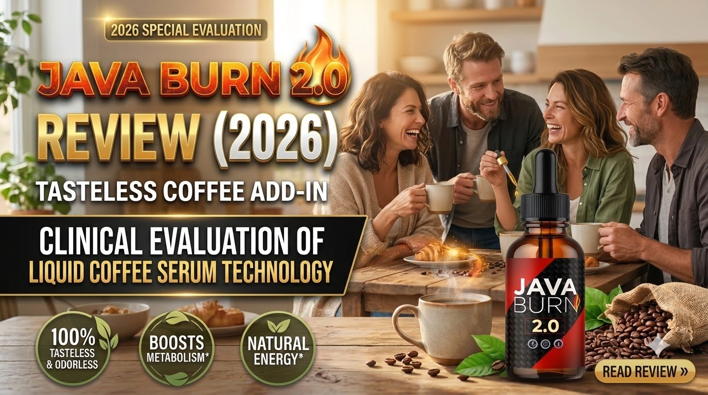

An exhaustive, unvarnished independent medical review of Java Burn 2.0. We analyze its patent-pending nutritional liquid serum complex, coffee-synergy fat burning mechanisms, manufacturing safety standards, and consumer value.

While early metabolic supplements relied heavily on compressed pills or loose powders that require digestive breakdown, Java Burn 2.0 introduces an advanced liquid serum formulation. Designed to dissolve instantly into morning coffee, it aims to optimize nutrient preservation and accelerate systemic absorption.
Integrates seamlessly into hot or iced coffee without altering taste, texture, or brewing temperature.
Engineered specifically to interact with coffee's natural polyphenols, igniting caloric burn and cellular energy.
Manufactured in an FDA-approved, GMP-certified facility under sterile, precise pharmaceutical standards.
Advanced nutritional serum delivers rapid sublingual and stomach absorption, bypassing liver degradation for immediate metabolic action.
Maximum percentage of active nutrients are preserved, eliminating the digestive loss typically associated with breaking down powders.
Leverages state-of-the-art precision dosing technology to ensure absolute potency consistency across every single serving.
Significantly more stable than powders, resisting oxidation and ingredient degradation over time.
Completely pure formulation free of the artificial flow agents commonly required in powder manufacturing.
Dissolves completely with zero residue settling at the bottom of the cup, ensuring full nutrient ingestion.
Researchers recommend consistent 90 to 180-day protocols for optimal cumulative results.
This product is backed by a 100% money back guarantee for 60 full days from your original purchase. If you're not totally and completely satisfied, simply return the product—even empty bottles or pouches—anytime within 60 days to receive a prompt, no-questions-asked full refund (less shipping and handling).
Research shows it’s best to take Java Burn consistently for at least 90 - 180 days to experience optimal results. We strongly recommend our 180-day supply package or 90-day deep-discount package while special pricing lasts.
Java Burn is 100% natural, safe, vegetarian, gluten-free, and non-GMO. Manufactured in an FDA-approved, GMP-certified facility in the USA with zero reported side effects.
Yes. Java Burn is the world’s first and only 100% safe and natural patent-pending formula designed to work synergistically with coffee to increase metabolic speed and efficiency.
Absolutely not. Java Burn is totally tasteless and dissolves instantly into your coffee, regardless of roast type or added creamers and sweeteners.
Simply add a serving of Java Burn to your coffee each day and enjoy normally with or without food.
No, you can enjoy Java Burn at any time of day. However, taking 1 serving with your morning coffee maximizes its effectiveness throughout the day.
The advanced liquid serum complex delivers faster sublingual/stomach absorption, superior bioavailability, precision dosing, longer shelf life, zero trace additives, and instant mixability.
While other beverages offer general benefits, Java Burn's patent-pending formula is specifically engineered to work synergistically with coffee.
Orders ship via premium carriers like FedEx or UPS. US and Canada orders arrive within 5 to 7 business days; international orders take 8 to 15 business days.
Absolutely not! This is a one-time payment only with no auto-ship programs, hidden charges, or subscription fees.
Yes, backed by a 60-day, no-questions-asked, 100% money-back guarantee. Contact support anytime within 60 days for a prompt refund.
Nope, absolutely not. Allowing Java Burn to enhance your health, energy, and metabolism is a total no-brainer :)
Lock in your special introductory pricing through the official manufacturer distribution portal today.
Visit Official Java Burn 2.0 Portal ↗Secure ClickBank Checkout • 60-Day Money-Back Guarantee